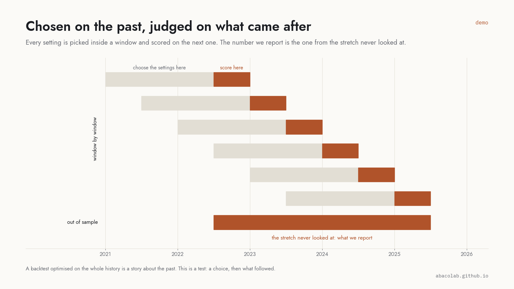
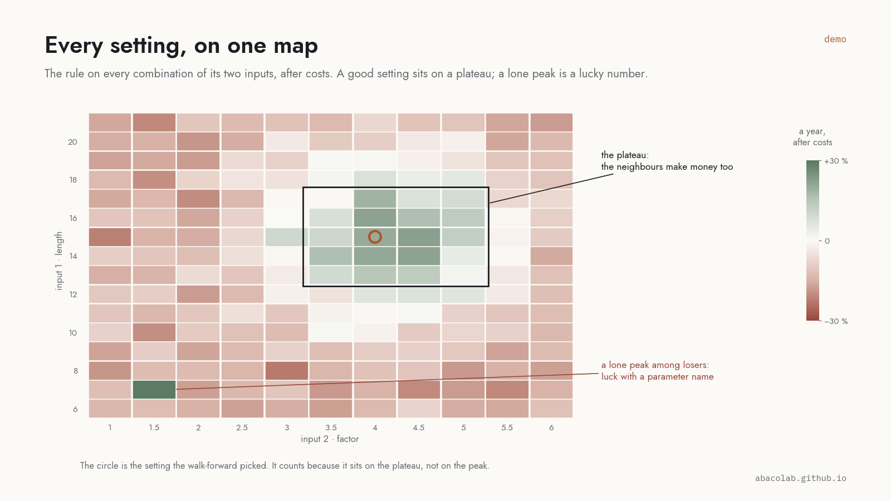
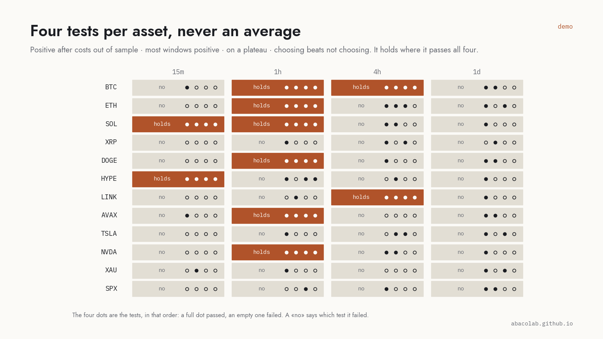

Out of sample, or it doesn't count
A backtest is a story about the past. A test is a choice made on the past and judged on what came after. Phisys only runs the second kind, and we only publish the second kind.
Chosen on the past, judged on what came after
Settings are picked inside a window and scored on the next one, window after window. The number Phisys reports is the one from the stretch never looked at. A rule tuned on the whole history has already seen the answer.


Every setting, on one map
The rule runs on every combination of its inputs, after costs, and the map shows them all. A good setting sits on a plateau: its neighbours make money too. A lone peak among losing cells is a lucky number, and it moves the day the market does.
Four tests per asset, never an average
The same four every time: positive after costs on the stretch never looked at; most windows positive, not one lucky year; on a plateau, three neighbours in four positive; and choosing beats not choosing, the settings chosen on the past ahead of two thirds of the fixed ones. The rule holds where it passes all four, and the page says which one failed where it does not. No averages across assets: a rule that works on three majors and fails on twelve others is a rule for three majors.

And the rest of the test
- Real costs. Fees, the measured impact spread, funding, slippage on stops, for the venue you will trade on. A rule that only works without them does not work.
- Every outcome where it was known. A signal at the close, a stop on the 5-minute bar that hit it, in the order it happened. Nothing from the future.
- The management on a grid. Stop in ATR, TP1 and TP2, breakeven, fixed-risk sizing: tried as a grid, with the same walk-forward, so the management is tested like the entry.
- The report as a page. Equity, trades, every window in sequence, the map of settings, the four tests, in a page you keep.
Studies
How much a timeframe costs October 2026
The typical move of one bar against the cost of one round trip, 55 Hyperliquid crypto perps, four timeframes. At 5 minutes the bar does not pay the trip; the trade must last about half an hour whatever the entry.
Read
Next: what a limit order really saves, measured on a live account; the weekend of stocks on Hyperliquid's HIP-3 perps; whether extreme funding predicts anything. All in notes.